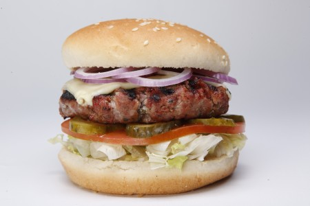

Cajun Cheeseburgers

Description
A Cajun twist on the classic Cheeseburger.
Ingredients
- 1lb ground beef
- 1 egg
- 1/4 cup breadcrumbs
- 1/4 cup BBQ sauce (use Jack Miller's Bar-B-Que sauce for extra Cajun-ness, but any BBQ sauce works!)
- Chachere's Original Creole Seasoning to taste
- PepperJack Cheese
- Hamburger buns
- All your favorite burger fixins
Steps
- Grilling gives the best flavor, but if you don't have a grill, heat a skillet on medium high.
- Bring the ground beef to room temperature. Use your hands or a potato masher to combine ground beef, egg, and breadcrumbs until they're evenly mixed. Add the BBQ sauce and Tony's and mix again.
- Divide ground beef into four equal patties, about 1/4 inch thick. When the skillet is nice and hot, place the patties in and flatten with a spatula. Let them cook until the edges are brown, about 5 minutes. Flip and let cook until the juices run clear, about 5 more minutes. Turn the heat off, add the cheese, and cover until the cheese melts. Place on a plate with a paper towel.
- Assemble your fixins. Place burgers on buns, add your favorite toppings, and enjoy!